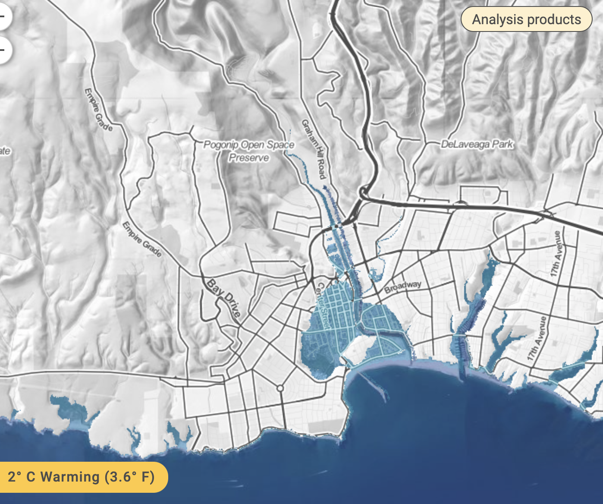
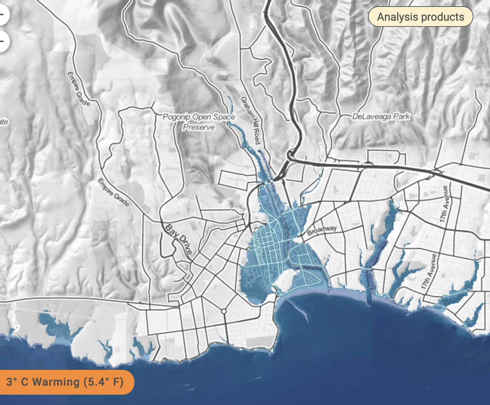
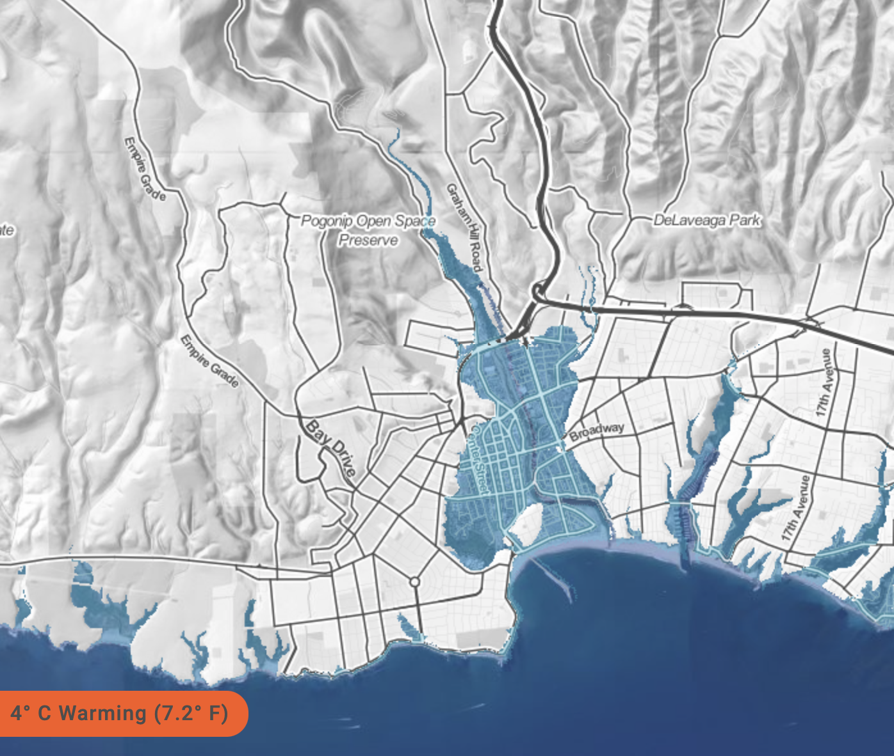

Warming of 1.5 °C (2.7 °F) is the preferred goal of many island nations as compared to 2 °C (3.6 °F), and corresponds to 2.9 m (9.5 ft) of locked-in rise.

Warming of 2 °C (3.6 °F) is the international target for global efforts to control greenhouse gas emissions. It also corresponds to 4.7 meters (15.4 feet) of global sea level rise locked in to someday take place.

Warming of 3 °C (5.4 °F) corresponds roughly to the current sum of “intended nationally determined commitments” for reducing emissions, and 6.4 m (21.0 ft) of locked-in global sea level rise.

Warming of 4 °C (7.2 °F) is close to our current path, would represent a breakdown in efforts, and corresponds to 8.9 m (29.2 ft) of locked-in global sea level rise.